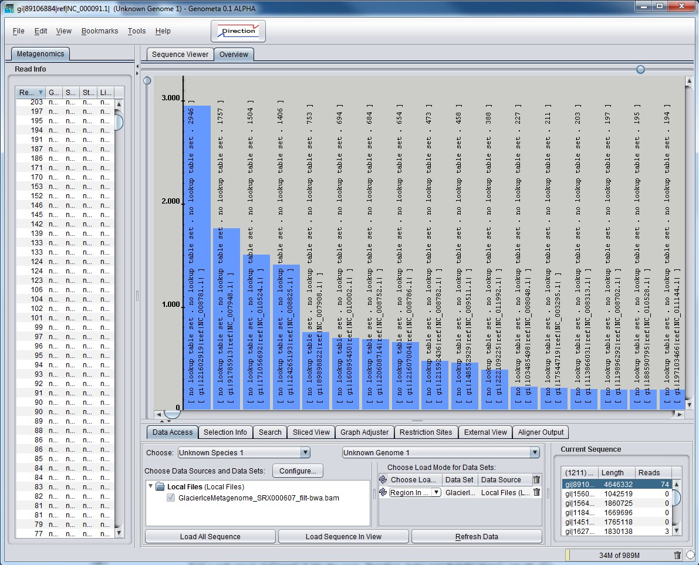
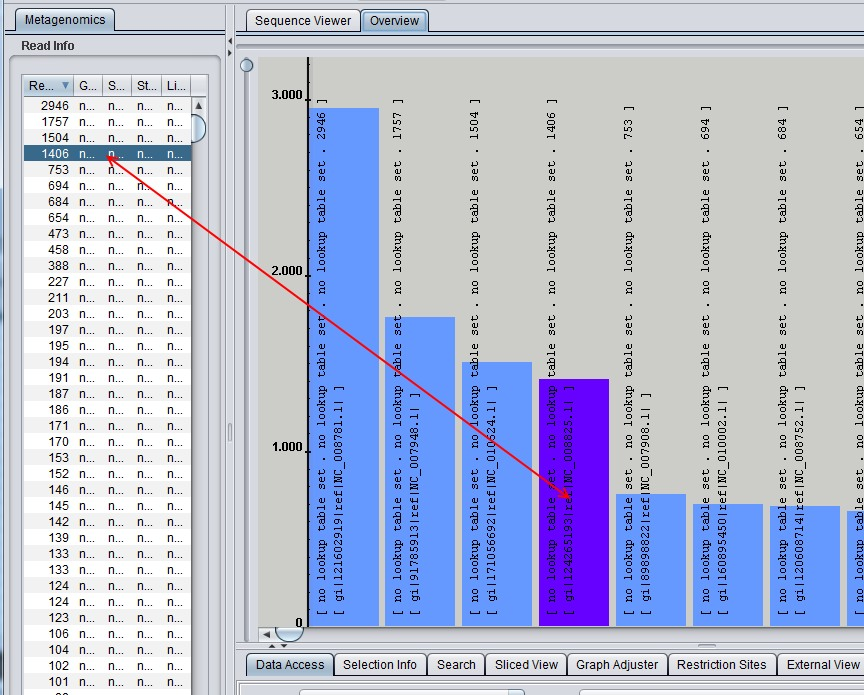

This feature helps the user of Genometa to overview the number of reads to every bacterial taxon. The presentation is displayed as a bar chart, where every bar appears to certain species. The height of the bars reflects the number of reads. Furthermore the bars contains other information of the species such genus, species, strain, read number and species-id. Figure 1 shows the appearance of the bar chart.

Figure 1
For showing up anything in the chart, the user should load a bam or sam file. After the loading is finished, the bar chart begins to prepare the data and shows them finally up. It is also possible to load an other file, so that Genometa will merge them and the bar chart reloads the data directly. If the user switch the data source, the bar chart relaod the new data directly too and keep previous data in cache, so they can reloaded quickly.
The controller upper and left of the chart are zoom-buttons. The upper one zooms horizontal and the left one vertical. In Figer 1 the upper zoom-button is moved to the right, that's why the bars are expanded and the text in the bars is shown. The scroll-bars are usable after zooming in a direction. The zoom center in vertical direction is always in bottom of the bars instead of the horizontal direction. The zoom center is here where the user have clicked on the chart (not within bars). A vertical hairline should appear there to show the user where the zoom center is. The hairline is by default at the vertical axsis.
The user can interact with the graph. If he clicks on any bar, this bar will be marked and Genometa jumps to the position of the species in the Sequence View Map. It is also possible to select a species in the left table. The related bar will be marked. Figure 2 shows a marked bar.

Figure 2